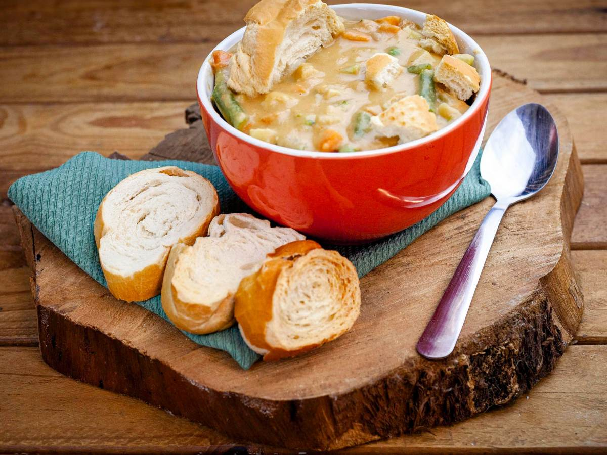
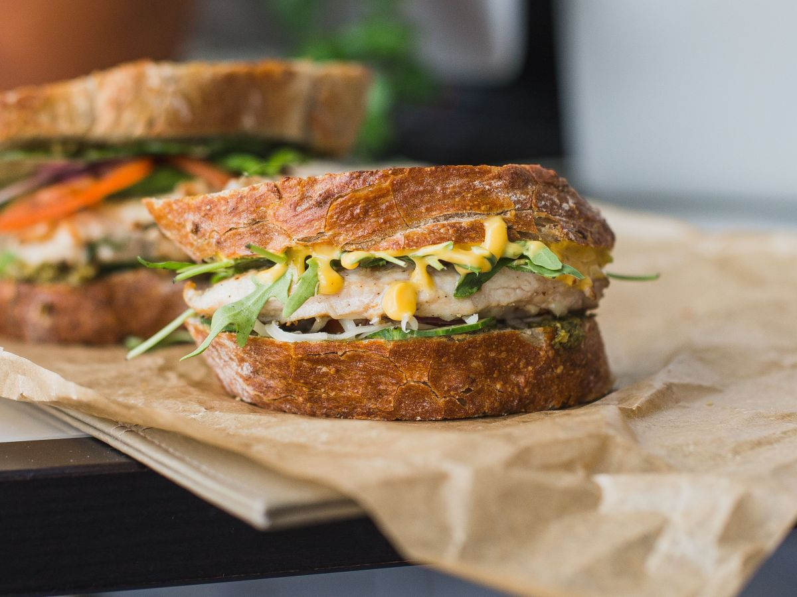
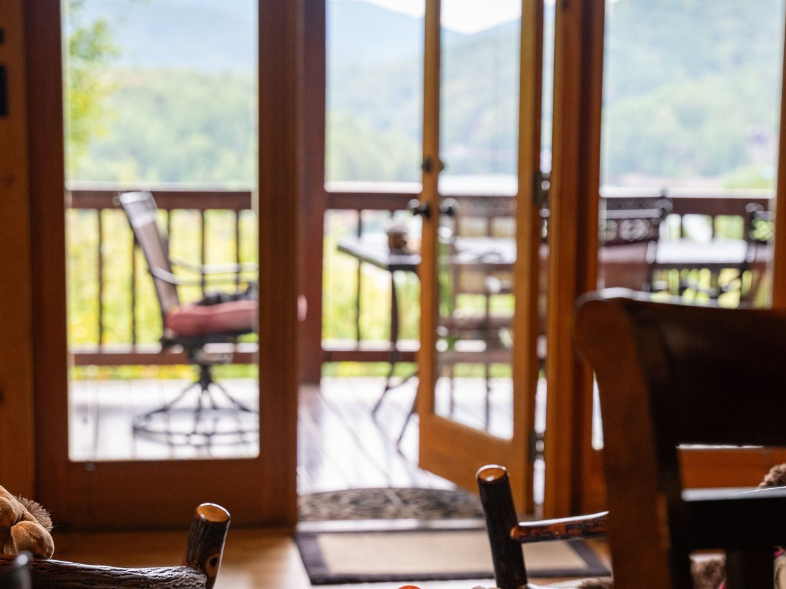
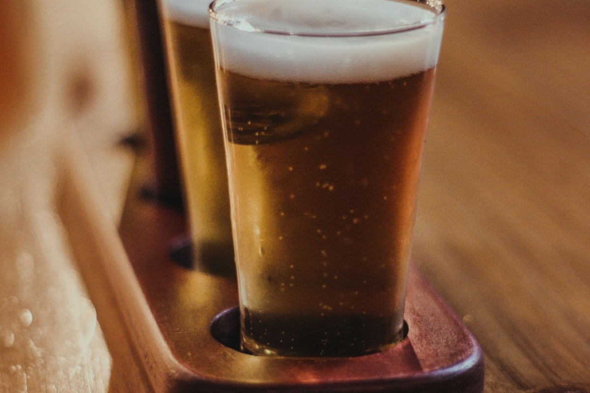
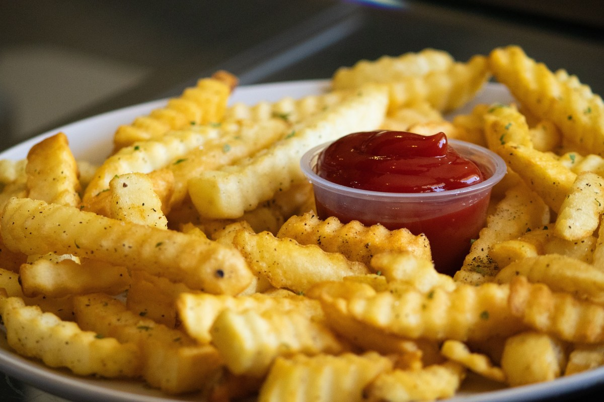
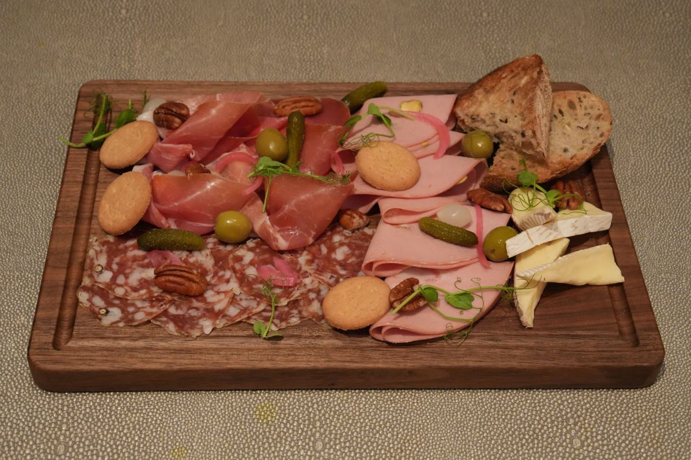
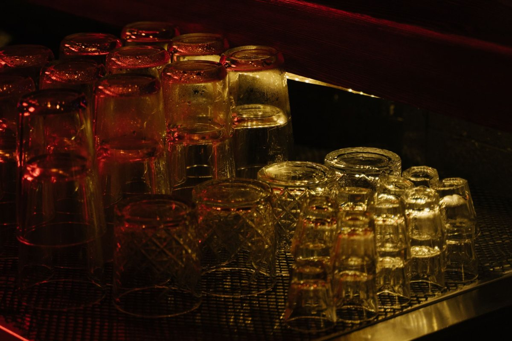
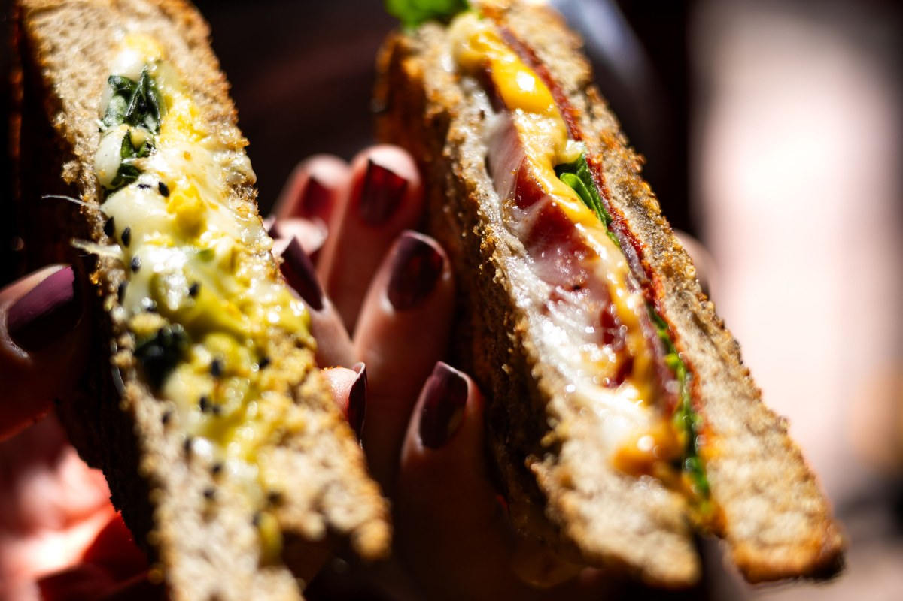
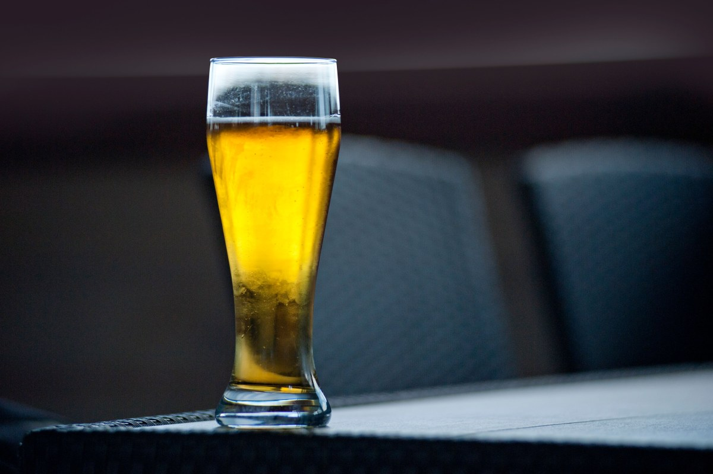

Restobar · Curarrehue
El mismo local, a tres horas distintas.
Almuerzo, sánguche o tabla: depende de cuándo llegue.
- 327reseñas en Google
- 4,7de nota
- 70personas en dos pisos
- 0páginas propias: todo está en Instagram
Restobar, explicado
El mismo local, tres horas
Abre de 12:00 a 23:45 sin cortar, pero no es lo mismo a cada hora.
-

13:00
El almuerzo
La hora fuerte. Si son varios, llame en la mañana.
-

17:00
El sánguche
Para el que bajó del cerro con hambre.
-

21:00
Tabla y conversación
El punto de encuentro del pueblo.
El horario de invierno lo confirma el local.
A las dos es almuerzo. A las nueve es otra cosa.
Lo que nadie escribe
Si viene en auto, organice la vuelta
- 01
Quién maneja
Se decide en el auto, no en la mesa.
- 02
Sin conductor
Avise temprano: de noche no hay taxis.
- 03
Algo sin alcohol
Y que sea bueno: el que maneja también vino.
- 04
Si se hizo tarde
En el pueblo hay dónde dormir.
Lo que el local puede ofrecer de verdad lo define Chefcito.
La vuelta se resuelve antes de la primera cerveza.
No después de la tercera
A la mesa
Sánguches, platos y tablas






Fotos de referencia: los platos de la casa los pone Chefcito.
Dónde estamos
O'Higgins 784, Curarrehue
- Dirección
- Av. Bernardo O'Higgins 784
- WhatsApp y teléfono
- 9 4295 4323
- Horario (Turismo Curarrehue)
- Todos los días, 12:00 a 23:45
- Reseñas
- 327 en Google, nota 4,7
Si viene de paso, avise desde el último punto con señal.
Av. Bernardo O'Higgins 784, Curarrehue Abrir en Google Maps
Para el dueño
Qué es real y qué falta
Lo verificado
El nombre, la dirección, el WhatsApp, el horario, la capacidad y las 327 reseñas con 4,7.
Lo de ejemplo
Las tres horas y la sección de la vuelta: a revisar con el local.
Lo que falta
El horario de invierno y las fotos del salón.